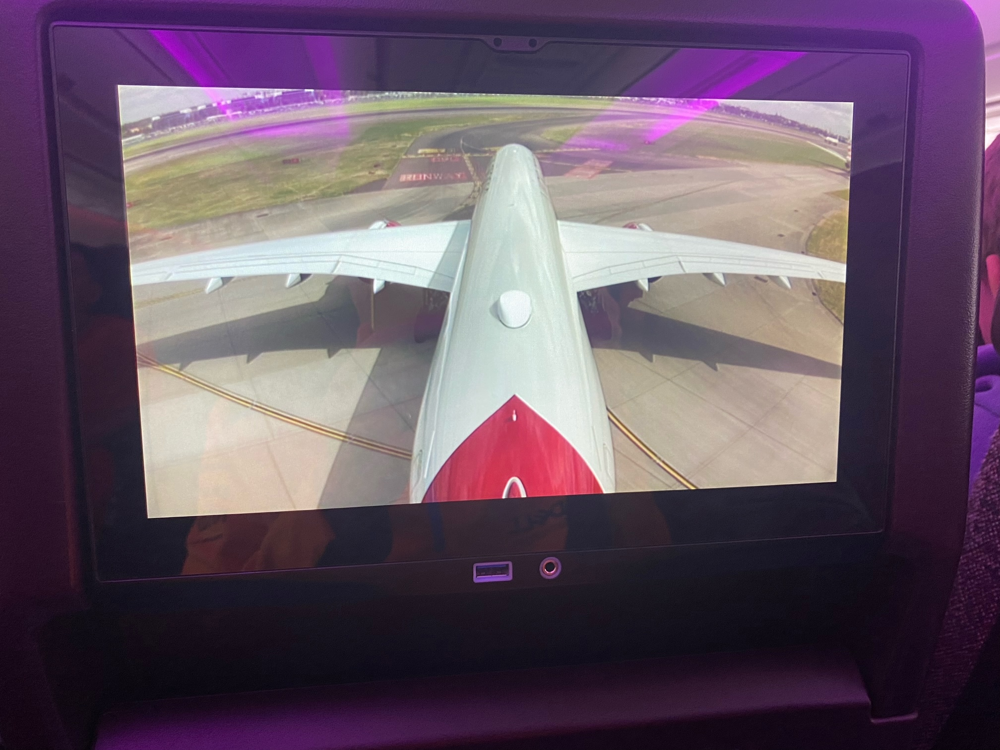
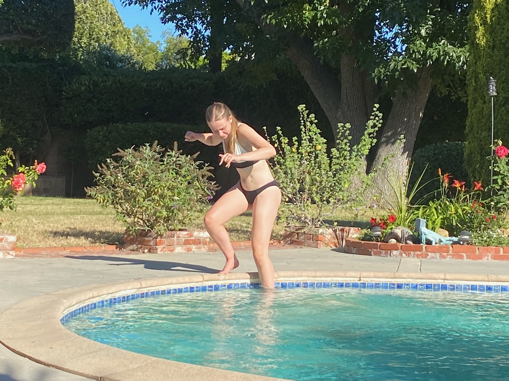

It 4am and I’ve been awake an hour - not ideal. Going to Disney in 3 hours - ideal!
Our journey was pretty smooth overall with just a few hiccups. Our plan was to set off after the Grand Prix on Sunday. Suitcases were all packed in advance. Great result for McLaren put me and the kids in a jolly mood. Having 2 huge suitcases in the back seat with the kids calmed that mood down quickly.
Relatively uneventful trip down apart from Alison being bullied into doing a McDonald’s drive through because the heavens opened at just the wrong time. The travelodge near Slough was the level of grotty expected for the price, with the obligatory broken main entrance to reduce security for guests.
The car drop off process was incredibly smooth. Bag drop and security relatively uneventful so that we had coffees and croissants about an hour or so after leaving the hotel. We did think about Wagamama for breakfast but it was a bit too weird.
Terminal 3 was very nice, apart there being too many humans. We found the edge with the designer shops which was a bit quieter. We had plenty of time so Jake thought about buying a backpack by McLaren for £805 and Freya thought about a £64k bracelet because the staff in Tiffany were chatty with her and Jake.
The flight set off pretty much on time with us watching the tailcam footage as we experienced the take-off. Overall, the plane and staff were great. Brief summary of the 11-hour flight:
- tailcam and forward live camera were fun
- plenty of leg room
- plenty of drinks trolleys
- meal 1 of chicken or pasta was very good
- John Wick got a bit boring for me in the 4th film
- starting with the 6th Scream movie by Freya was a bit weird
- Jake brought a branch of Dixons to see how many devices he could get on the plane’s wifi
- meal 2 of a toastie was good
- handing round ice lollies was a nice touch
- Alison had a good cry at Man called Otto
- Cocaine Bear was brilliant
- meal 3 of afternoon tea was nice too
- love hearts for landing was a special treat

Smooth arrival with me getting 3 of the 4 bags in about 30 seconds at the carousel then easy passport control. All fingers and thumbs scanned for the other 3 but nothing for me. I hope they let me back out!
Outside was carnage. There’s one road and loads of shuttle buses, including one that takes you to where to get a taxi. Eventually we worked out where to go and what bus to catch for the car hire place. Getting tired now but plenty of incompetence from Alamo made getting the car less smooth. The roads were busy but we got to our ranch 15 minutes after earliest possible check-in. Pretty good planning to say that was 31 hours after leaving home.
We emptied our “mid-size” SUV which could only be anything other than large in the US. The kids appreciated loads of rooms and no bags in the back seat. Quick trip to the supermarket Ralph’s and back to the ranch. The oldies did the minimum needed to be ready for tomorrow. The kids went in the the cold pool and the hot tub. More about the ranch another day…

Disney - we’re coming for you!